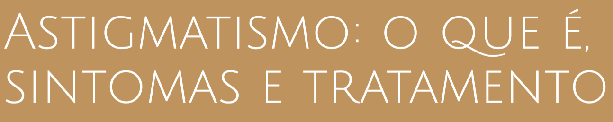
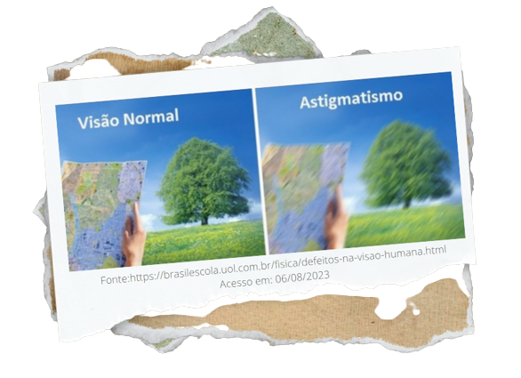

O QUE É ASTIGMATISMO?
O astigmatismo é um erro de refração dos olhos e ocorre quando a córnea — estrutura amplamente envolvida na forma-
ção da imagem — perde sua curvatura natural. Ela normalmente tem uma superfície simetricamente curva.
Quando a pessoa tem astigmatismo, no entanto, essa camada é assimétrica e não permite a incidência perfeita dos raios
luminosos na retina. Como resultado, as pessoas têm uma visão borrada e pouco nítida.
